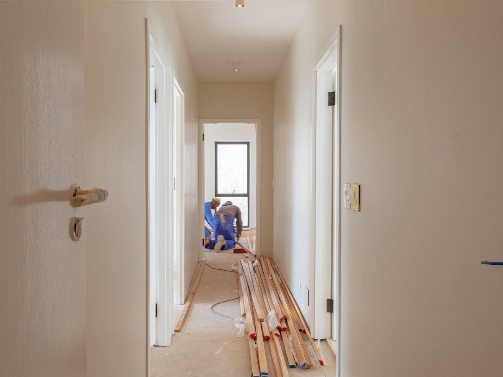

Builders in Tulbagh
Restoring Cape Dutch homesteads and building new homes in one of the Western Cape's most historic towns.

Respecting Tulbagh's heritage
Boland Structures restores, renovates and builds in Tulbagh and the surrounding valley, about an hour from our Worcester yard. Much of our work here is on Cape Dutch buildings that need heritage permits and traditional materials.
Tulbagh is famous for Church Street, where many historic buildings were restored after the 1969 earthquake. Building here means working with heritage rules, older materials and Witzenberg Municipality, and designing structures with the area's earthquake history in mind.
- From our yard
- 1 hour · 60 km
- Projects here
- 20+
- Municipality
- Witzenberg
Our services in Tulbagh
Construction in Tulbagh
New homes and cottages designed to sit comfortably beside Tulbagh's historic buildings.
Learn moreRenovation in Tulbagh
Cape Dutch restorations with lime plaster, matched gables and modern kitchens and bathrooms.
Learn morePlanning in Tulbagh
Heritage permit applications and plans submitted to Witzenberg Municipality.
Learn moreConcrete works in Tulbagh
Foundations and slabs designed with Tulbagh's seismic history in mind.
Learn more
Building in Tulbagh: what to know
Tulbagh asks more of a builder than most Boland towns. Here's how we approach it.
- Heritage permitsStructures older than 60 years need a permit from Heritage Western Cape before alterations. We prepare the application with a registered heritage practitioner.
- Traditional materialsOld walls need to breathe. We strip trapped cement plaster and re-plaster with lime, and match original gables, shutters and yellowwood details.
- Earthquake historyThe 1969 Tulbagh earthquake was the strongest in South Africa's recorded history. Our engineers design new structures and major alterations with seismic loads in mind.
- Witzenberg approvalsPlans go to Witzenberg Municipality, not Breede Valley. We know its process and submit complete packages to avoid delays.
Built in Tulbagh
All projectsThey treated the house like it was their own. The gable looks exactly like the old photographs, and the damp is finally gone.
Building in Tulbagh: your questions
Do I need a heritage permit to renovate in Tulbagh?
If any part of the building is older than 60 years, yes. A permit from Heritage Western Cape is needed before alterations. We prepare the application with a registered heritage practitioner.
Can you restore a Cape Dutch house?
Yes. We've restored Cape Dutch homesteads in the Tulbagh valley, including stripping cement plaster, re-plastering with lime and matching original gables.
Who approves building plans in Tulbagh?
Witzenberg Municipality. We prepare and submit plans and follow them through to approval.
Do you charge travel to Tulbagh?
The first site visit is free. Because Tulbagh is about an hour from our yard, travel is listed as a separate line in your quote, so you can see exactly what it costs.

Other areas we serve
Across the Boland and Breede River Valley
- Worcester
- Rawsonville
- De Doorns
- Touws River
- Robertson
- Ashton
- Montagu
- Ceres
- Wolseley
- Tulbagh
- Wellington
- Paarl

Building in Tulbagh?
Book a free site visit and get a fixed-price quote within 5 working days.